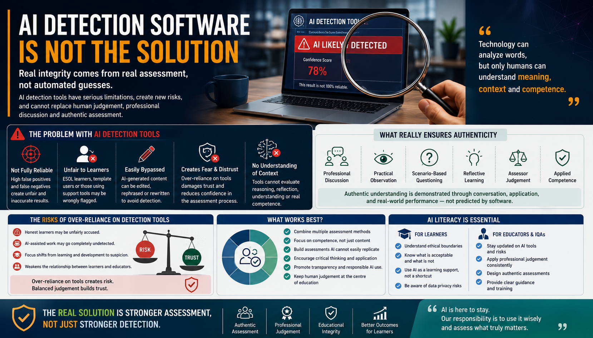

Real educational integrity does not come from automated guesses. It comes from authentic assessment, professional judgement, learner dialogue, and quality assurance systems that verify real competence.

As artificial intelligence becomes increasingly common in education, many schools, colleges, universities, and training providers are searching for ways to protect academic integrity and verify authentic learner work. In response, some organisations have turned towards AI detection software, hoping that technology can identify whether coursework has been generated by tools such as ChatGPT, Microsoft Copilot, Gemini, or other generative AI systems.
At first glance, this can appear to be a practical answer. It seems quick, technical, and reassuring. However, the reality is more complex. AI detection software is not a complete solution for educational integrity. In many cases, over-reliance on detection tools can create new problems for learners, educators, assessors, IQAs, and training providers.
One of the biggest challenges is reliability. Many AI detection systems claim to identify AI-generated writing by analysing sentence structure, predictability, language patterns, or writing consistency. However, these systems can produce false positives, where genuine learner work is incorrectly flagged as AI-generated.
This creates serious concerns about fairness, assessment validity, and learner confidence. For example, an ESOL learner may use formal academic language because they have learned English through textbooks, sentence models, or structured writing templates. A detection tool may incorrectly treat that polished structure as suspicious.
Learners may also be flagged unfairly when they use legitimate support, including:
The opposite problem also exists. AI-generated content can be edited, rewritten, personalised, or restructured before submission. In those cases, detection software may not identify AI involvement at all. Providers can quickly enter a weak cycle where honest work is flagged, AI-assisted work is missed, and confidence in the assessment process is damaged.
Educational integrity cannot rely solely on automated detection systems. Detection may provide a signal, but it should never replace assessment design, professional discussion, practical evidence, and assessor judgement.
For many years, written assignments were treated as strong evidence of learner understanding. Producing a detailed piece of written work often suggested that the learner had researched, understood, organised, and explained the subject. Generative AI has changed that assumption. Learners can now produce convincing written responses in seconds, which means written evidence alone is no longer always enough to prove genuine competence.
The solution is not to make assessment more suspicious. The solution is to make assessment more authentic.
Authentic assessment allows learners to demonstrate:
Professional discussion is one of the most effective methods for checking authenticity. For example, a cybersecurity learner may submit an excellent assignment on phishing, malware, and network security controls. The written work may look highly professional. However, during a professional discussion, the learner may struggle to explain how phishing emails are identified, what incident response steps should be followed, or why network segmentation improves security.
In that situation, the issue becomes clear through human conversation rather than software prediction. Professional discussion, workplace observation, scenario-based questioning, reflective learning, and practical demonstrations provide stronger evidence of genuine competence than written work alone.
When organisations rely heavily on detection systems, learners may feel that they are constantly being monitored or accused. This can damage trust, reduce confidence, and create anxiety around legitimate support tools.
Educators and assessors may become over-dependent on technology instead of applying professional judgement. This is risky because assessment involves context, dialogue, evidence interpretation, and human understanding.
AI detection systems cannot fully evaluate learner confidence, practical competence, communication ability, reasoning, reflection, or professional judgement. These remain fundamentally human areas of assessment.
This does not mean AI detection tools have no value. In some cases, they may help identify unusual patterns or support risk-based quality assurance. However, they should only ever be used as one small part of a broader authenticity strategy.
A stronger approach combines responsible AI governance with authentic assessment practice. Providers should not ask only, “Can we detect AI?” They should ask, “Can the learner explain, apply, justify, and demonstrate what they claim to know?”
Use structured questioning to verify understanding, reasoning, and the learner's ability to explain their own evidence.
Ask learners to apply knowledge to realistic situations where generic AI-generated answers are less useful.
Use observation, demonstrations, projects, presentations, and workplace evidence where appropriate.
Ask learners to explain what they did, why they did it, what changed, and what they would improve next time.
Train assessors to interpret evidence holistically rather than relying on a single software score.
Teach learners and staff the ethical boundaries, risks, acceptable use, and limitations of AI tools.
This article should not remain as theory. Training providers, assessors, IQAs, and education leaders can use the following practical approach to protect authenticity while still supporting fair and modern learning.
A learner submits a written assignment that appears unusually polished. Instead of relying only on an AI detector, the assessor arranges a short professional discussion. The learner is asked to explain three key points from the assignment, apply the concept to a real scenario, and reflect on how they reached their conclusion. The assessor records the learner's responses and uses this alongside the written work to make a fair judgement. The IQA later samples the written evidence, the discussion record, and the assessor's decision-making notes.